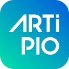
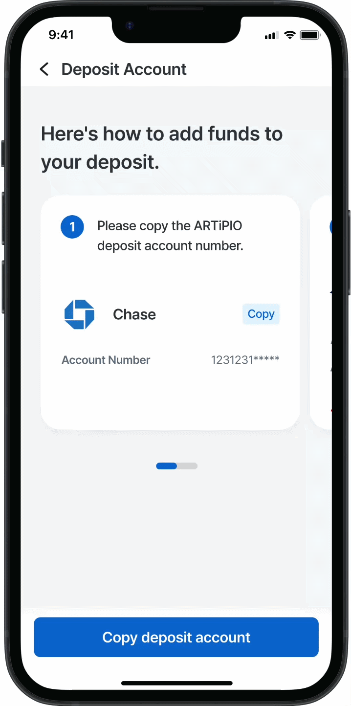
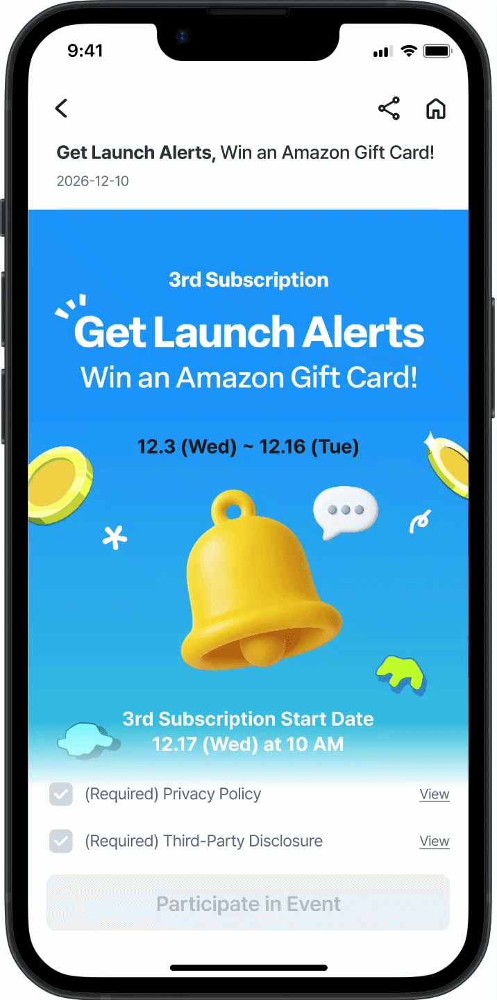
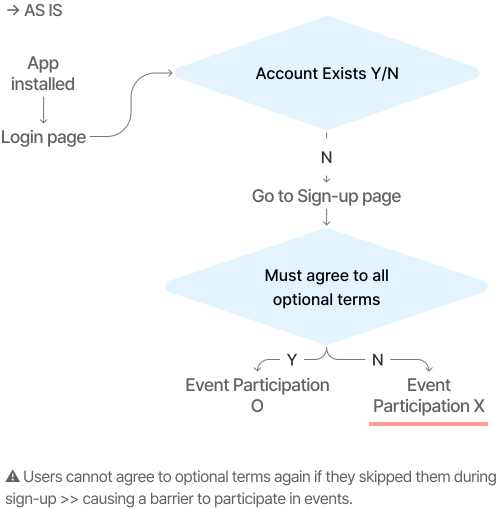
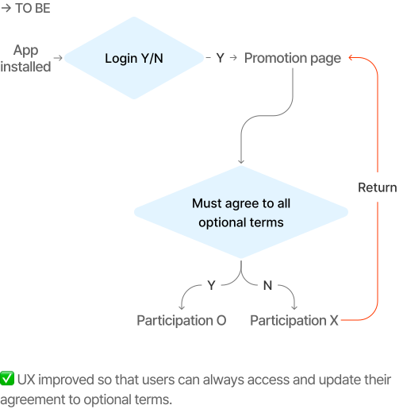
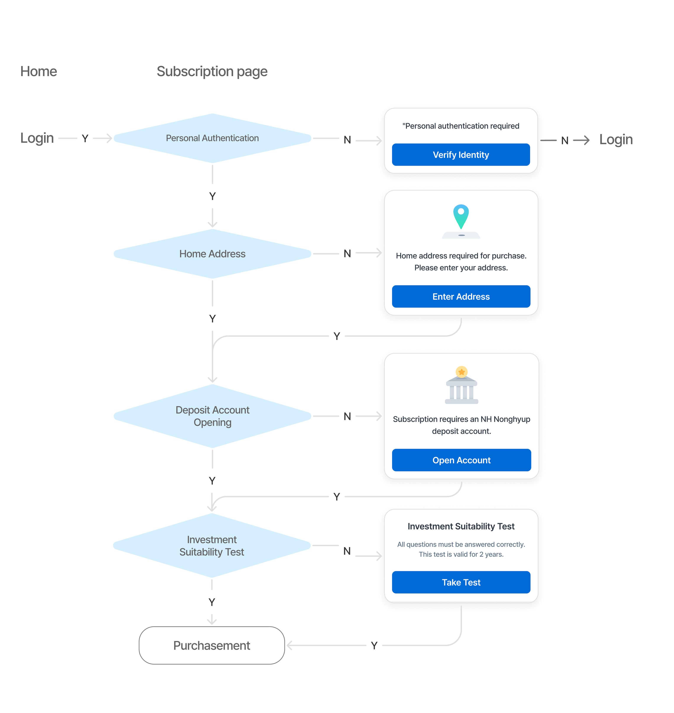
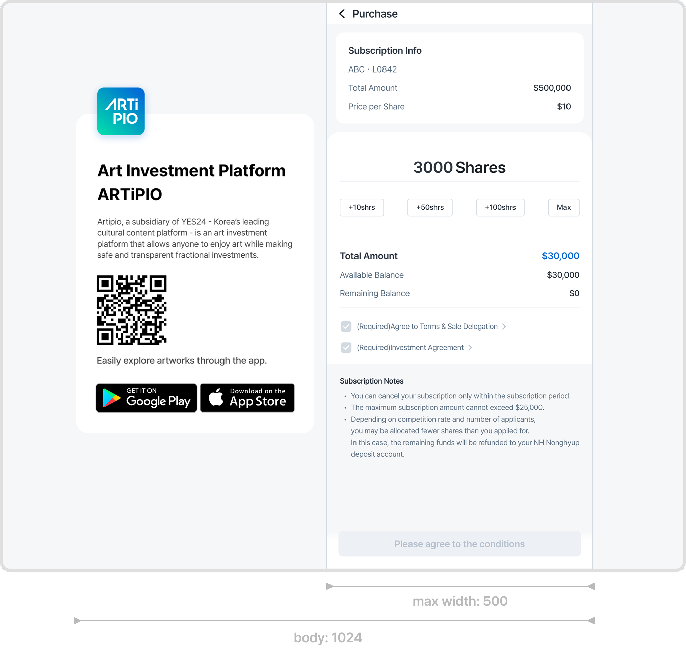
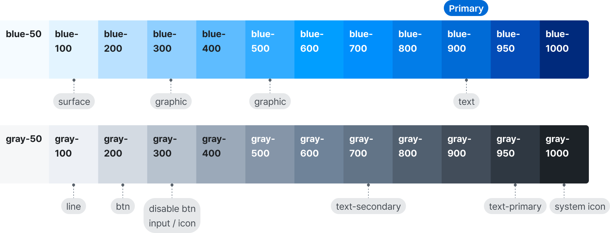
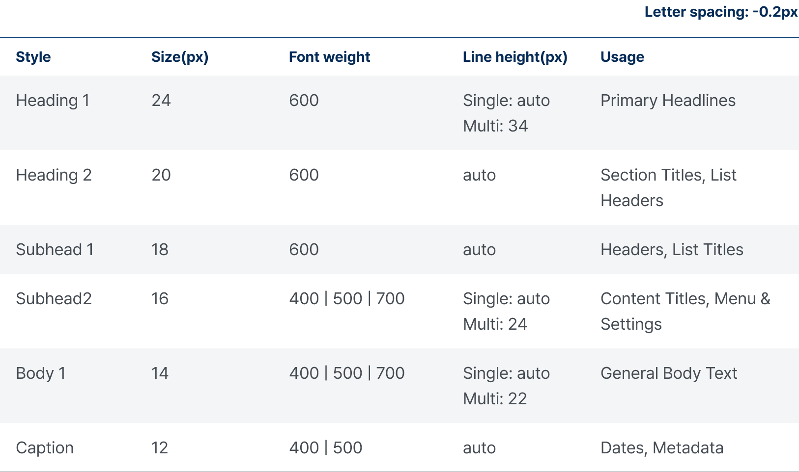
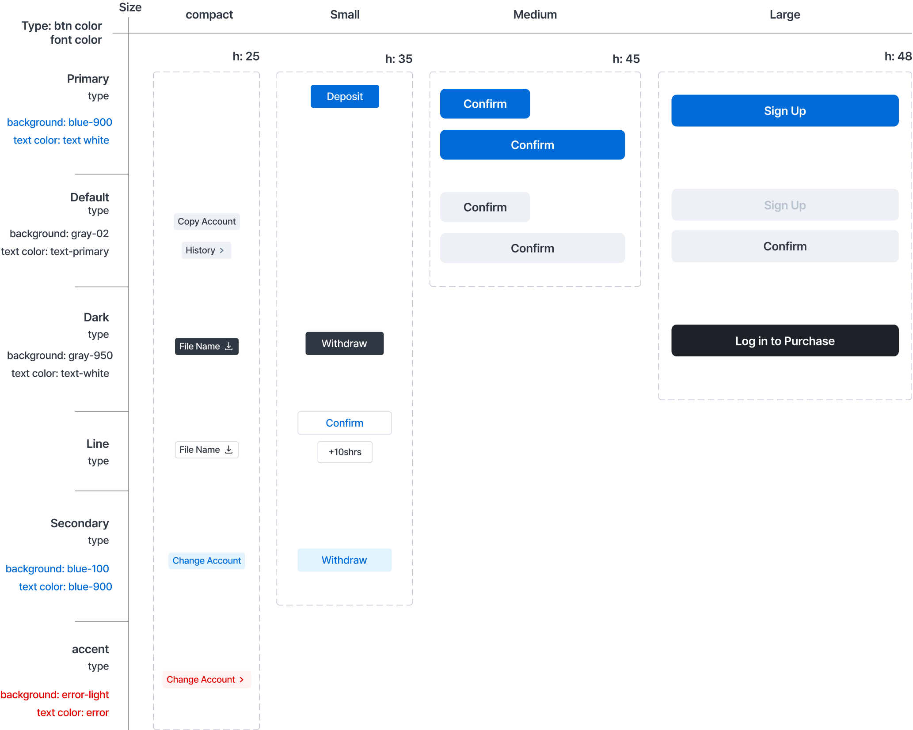

ARTiPIO
ARTiPIO is a service where users can invest in high-end artworks starting from just $10 (10,000 KRW). It curates premium art pieces and provides clear market trends so anyone can easily start art investing. The platform runs on traditional bank networks and escrow systems to follow strict financial regulations for Investment Contract Securities.
Summary
Summary
As the sole Product Designer leading the initial 0-to-1 launch, I established the platform’s product architecture and systemic flow from scratch. Following the full operational cycle of the live product, I analyzed real user behavioral constraints and 96 post-launch VOC cases to drive the next product phase—systematically restructuring core transaction pipelines, resolving regulatory friction, and optimizing complex financial edge cases.
VOC Analysis
VOC Analysis
96 operational VOC cases were analyzed to identify recurring friction across the investment experience. The most critical issues emerged during deposit handling, participation flows, and transaction-related decision making.
The core challenge was not visual usability, but helping users understand complex financial states, participation conditions, and transaction requirements within the product experience.
Total Inquiries
› 2 inquiries that accounted for the largest portion
96 cases
Account
40 cases
- Deposit Issues
- 19 cases
- Account Creation
- 11 cases
Events
7 cases
- Terms Agreement
- 7 cases
Issue 1
Issue 1
Deposit issue: 19 cases
Problem
Users frequently misunderstood supported deposit methods and transfer conditions, resulting in failed transactions and repeated operational inquiries.
Voc
If I press the recharge button, only the account number appears, and there's no option to proceed with the recharge. I want to try applying, but I can't proceed due to this system issue.
I'm trying to recharge by transferring funds from the Kakao app to the registered Nonghyup account, but the recharge keeps failing. Do I need to transfer from another bank's app?
I'm trying to deposit into a virtual account, but I keep getting an error. I contacted the bank, but they told me to inquire with the company instead.
How do I deposit investment funds?

Previous UX
Unclear Deposit Method
Investment funds must be transferred directly to ARTiPIO's virtual account through certain bank apps. As transfers may not be possible from external apps, it is crucial to guide users to the correct method through a dedicated screen.
Open Banking Deposit Error
Due to strict financial institution policies and compliance restrictions, instant transfers via third-party P2P platforms such as Zelle, Venmo, or PayPal may occasionally fail. Therefore, providing clear and intuitive UX guidance is essential to help users complete their transactions.

Solution
Direct Bank Transfer
Clearly show the bank name of the registered withdrawal account to help users transfer funds easily via that bank’s app.
Enhanced Copy UX
Enhanced the visual hierarchy of the 'Copy' button to trigger immediate user action, while providing a detailed step-by-step breakdown of the deposit process to lower cognitive load and ensure a seamless external transfer.
Issue 2
Issue 2
Terms Agreement: 7 cases
Solution
Users struggled to find where to agree to event terms, as the consent checkboxes were hidden deep at the bottom of the long scroll.
Voc
I accidentally missed selecting the optional agreements during sign-up. What should I do? I want to apply for the event.
I did not agree to the optional terms when signing up, but now I want to change it to agree. However, I don't know where to do it. Please change it to agree for the optional terms.
I accidentally unchecked the optional agreements and only agreed to the required ones.

Previous UX
Low Visibility & High Friction
The previous event consent flow caused significant user confusion. The location for terms agreement was highly unclear, and users were forced to scroll all the way to the bottom of the screen just to find the required checkboxes. This tedious layout led to high friction and prevented seamless event participation.

Solution
Accessible Consent Update
Allows users to easily modify and update their marketing agreement directly on the promotion page at any time.
Optimized Return Flow
Introduced a flexible return loop in the UX flow, ensuring existing users who skipped terms during sign-up are no longer blocked from participating.


Edge Case Handling
Edge Case Handling
Feature: Subscription Purchase Logic
I mapped out four distinct exception scenarios where the user's available deposit and the strict $25,000 subscription limit conflict.
When multiple errors occur simultaneously (exceeding both the limit and deposit), the UI intentionally prioritizes the "Insufficient Deposit" alert over the limit constraint. This strategic nudge guides users to top up their balance first, providing a clear next action and preventing transaction drop-off.

Case 1: Funding Gap as the Top Priority
Scenario: When a funding gap occurs, the UI intentionally guides users to top up their deposit first, even if the maximum purchase limit is simultaneously triggered.


Case 2: Handling Maximum Limit
Scenario: The entered amount exceeds the maximum legal limit ($25,000). The system strictly blocks the transaction and guides the user to adjust their amount.

IA
IA
Flow of purchasing subscription
The 4 Hard Gates to Purchase
To comply with strict financial regulations, users must pass four consecutive verification stages before they can complete a purchase. Since failing any single step completely blocks the transaction, I designed targeted modal flows and action buttons to guide users through each hurdle with minimal friction.

1. Identity Verification
Categorizes users by age requirements (over/under 19). If authentication fails, purchase functionality is strictly locked.
2. Residential Address
Captures essential legal data mandated under local financial laws to authorize subscription eligibility.
3. Virtual Account Setup
Enables seamless fund routing through automated escrow account creation with certain Bank.
4. Investment Suitability Test
A legally mandated investor-protection assessment that evaluates the user's risk tolerance before unlocking the final purchase action.
Fluid Layout
Fluid Layout
Flow of fluid aspect ratio scaling
To support diverse device screen sizes, the home banner components scale dynamically based on a fluid aspect ratio. While the image adapts to the container's width, fixed side margin values are preserved to maintain structural stability and prevent layout breaking.

Mobile-First Web Adaptation
ARTiPIO was originally designed as an app-based service within a hybrid environment. Rather than fully restructuring the entire product for desktop, which would have significantly increased development and QA scope, the existing interface was adapted for wider web screens. The core app structure was preserved for cross-platform consistency, while the additional desktop space was used to provide service information and guide users to the mobile app.

Design System
Design System
Color Tokens
I established a scalable color system by defining blue and grayscale palettes and mapping each token to a functional role, including surfaces, graphics, text, borders, buttons, and system icons. This created a consistent framework for applying color across the product.

Typography System
I defined a typography system across headings, subheads, body text, and captions, specifying font size, weight, and line height for each usage. Separate single-line and multi-line rules were established to maintain consistent hierarchy and readability throughout the interface.

Button Components (Atom)
To maintain high code-reusability and strict design consistency, I established a foundational button token system in alignment with Atomic Design principles, defining a systematic matrix that categorizes buttons into 4 adaptive sizes (compact, Small, Medium, Large) and 6 distinct hierarchical variants (Primary, Default, Dark, Line, Secondary, Accent). By collaborating closely with the engineering team from the initial setup, these atomic components were mapped directly to engineering design tokens to eliminate redundant code, safeguard the UI against layout breaking, and ensure seamless cross-functional handoffs.
